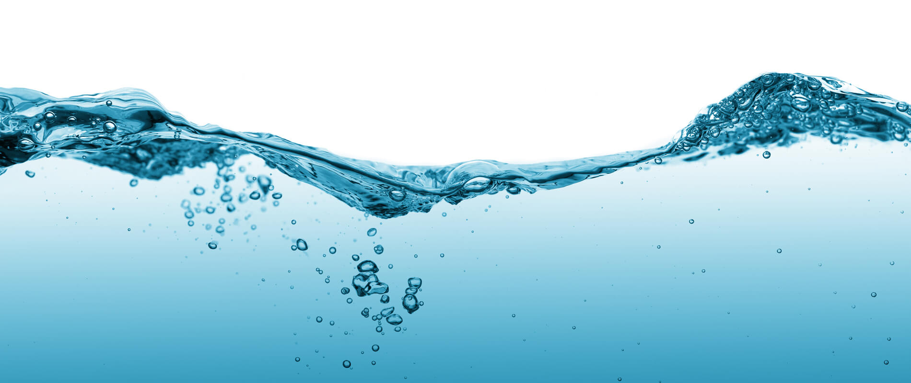
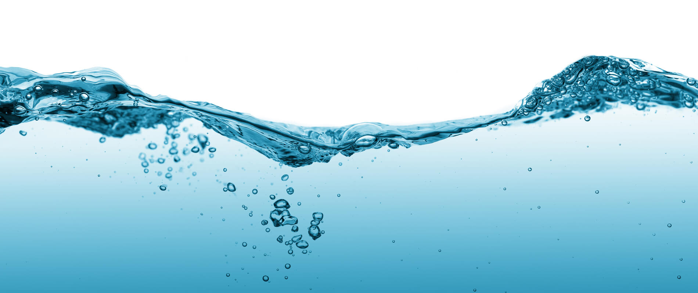
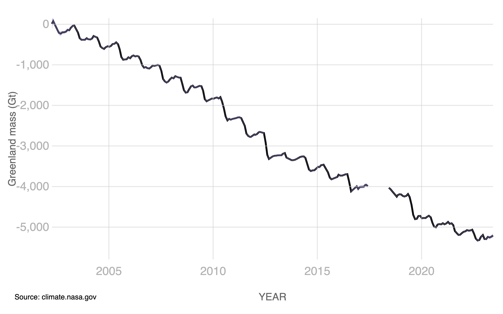
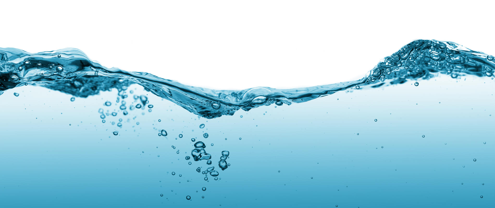

Since the Industrial Revolution, greenhouse gas emissions have steadily been increasing, aiding to global warming. As a result, Antartica is losing about 150 billions tons of ice mass per year, while Greenland is losing about 270 billion tons per year.


One of the most obvious problems with the melting of the glaciers and ice caps is the increasing sea levels. However, this means a higher risk of flooding in coastal areas, causing more people to be displaced from their homes. The worst of those affected will be those with lower socioeconomic status
Furthermore, melting glaciers make their own situation worse as they can release bacteria that will then consume frozen organic matter and release carbon dioxide. These same melting glaciers are also the ones that trap ancient reservoirs of methane.
Finally, the creatures who dwell in the cold temperatures of the Arctic are rapidly losing their habitat in chunks and are possibly well on their way to extinction in the wild. Some recent studies have even found that inbreeding within the polar bear community